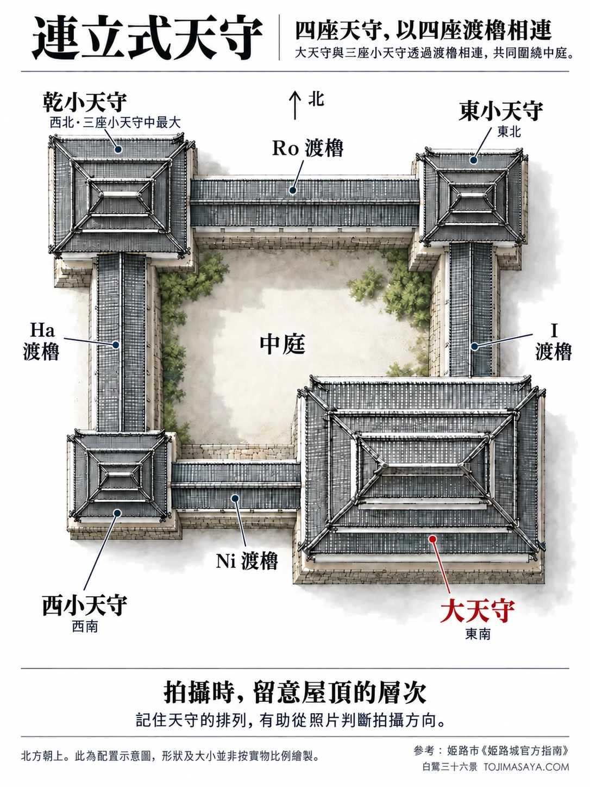
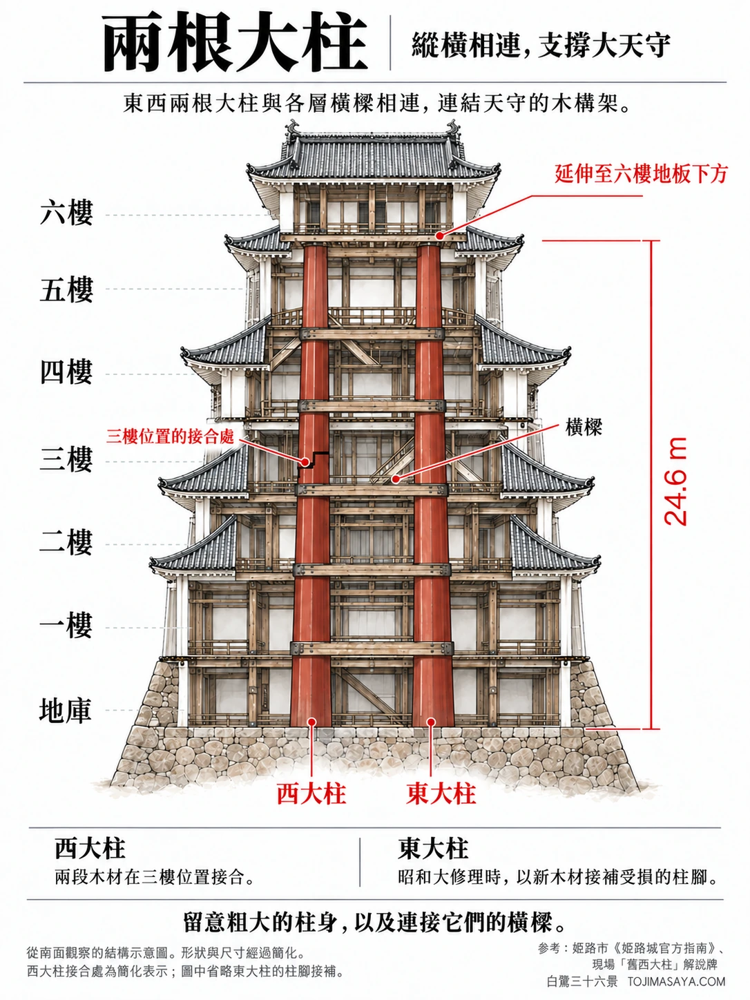
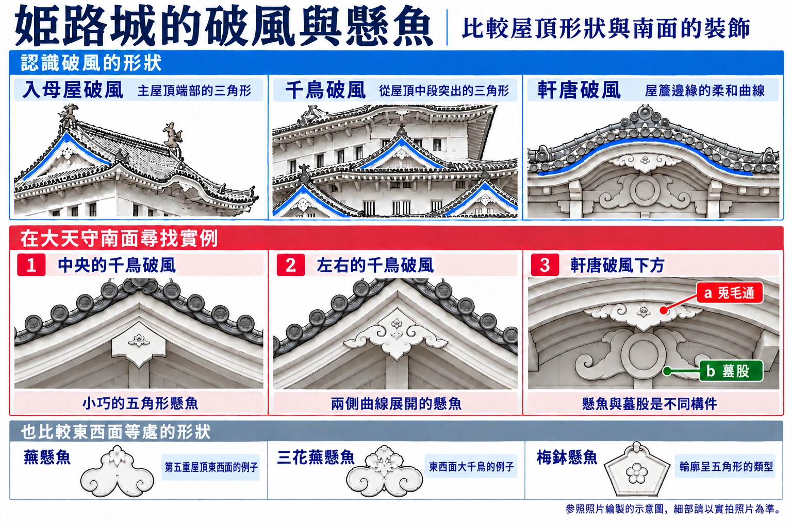
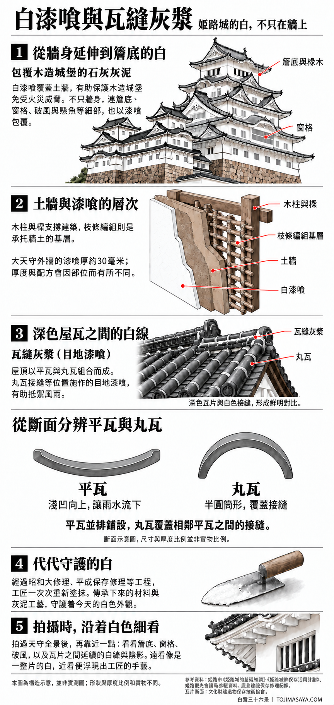
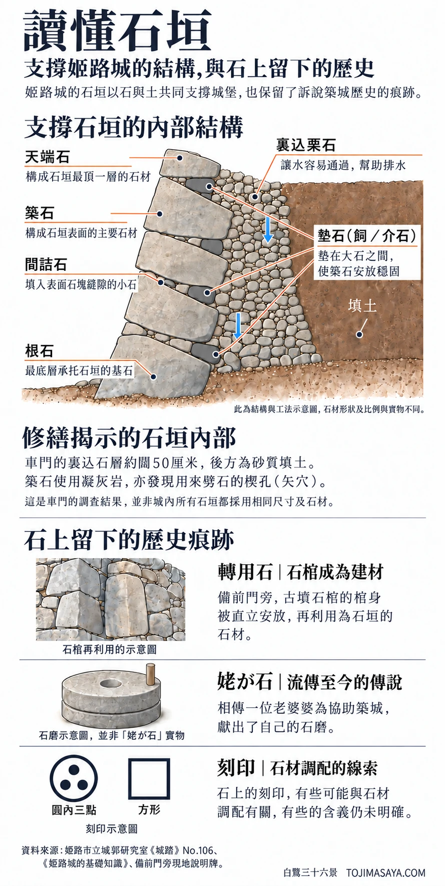
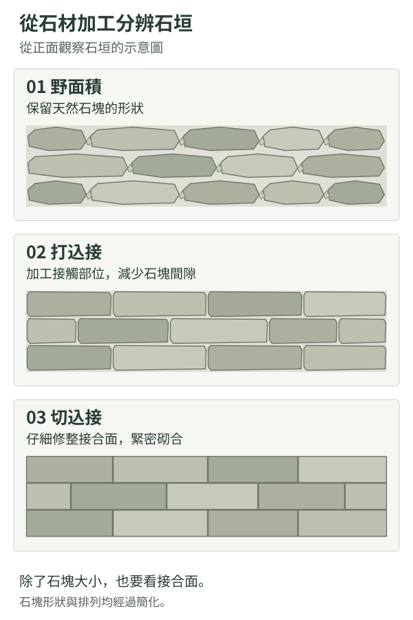
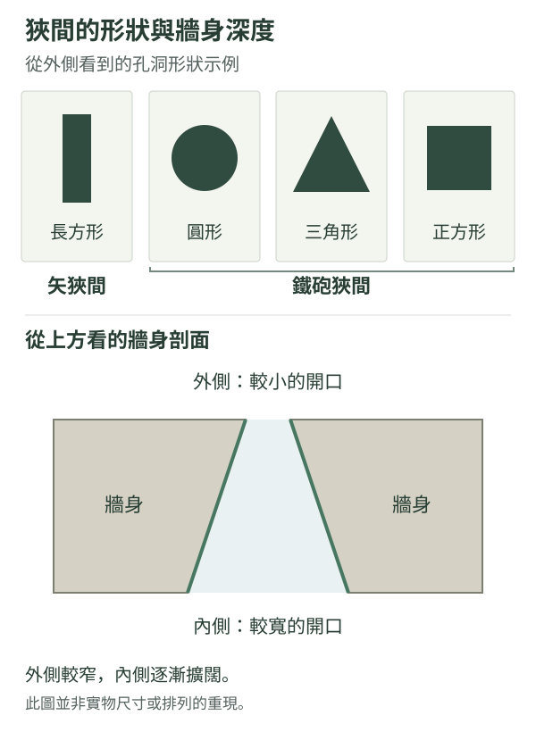

根據公開資料及原有配置圖，運用 AI 輔助製作的繁體中文建築圖解。北方朝上，I、Ro、Ha、Ni 為四座渡櫓的羅馬字標記。屋頂形狀、建築大小及植栽均為示意，並非實物的精確重現。
不是一座天守，而是四座相連的建築
從正面看，大天守最引人注目，但周圍還有乾、東、西三座小天守，以四座渡櫓相連。順着屋頂看它們如何連接，就更容易理解「連立式」這個名稱。
四座渡櫓是連接各座天守的建築，分別稱為 I、Ro、Ha、Ni，對應日語名稱「イ、ロ、ハ、ニ」。
四座天守的位置與樓層＋ 閱讀更多− 收起
- 大天守 東南
- 外觀五重 / 地上六層、地下一層
- 乾小天守 西北
- 外觀三重 / 地上四層、地下一層
- 東小天守 東北
- 外觀三重 / 地上三層、地下一層
- 西小天守 西南
- 外觀三重 / 地上三層、地下兩層
從外面數的屋頂「重」數，與內部的樓層並不相同。這裏的樓層數依據姬路市指定文化財一覽。
 攝影：田路昌也欣賞第七景：男山高台的新綠與天守群
攝影：田路昌也欣賞第七景：男山高台的新綠與天守群
參考資料：姬路城官方「城之樂趣」（日文）、姬路市「I、Ro、Ha、Ni 渡櫓」解說（日文）、姬路市《市政概要》指定文化財一覽（日文 PDF）、姬路城官方指南第43至46頁（日文 PDF）

根據公開資料及原有結構圖，以AI輔助製作的建築圖解。紅色表示東西兩根大柱。這是說明地板與橫樑關係的示意圖，形狀與尺寸經過簡化。西大柱三樓位置的接合處已簡化；東大柱柱腳的接補及細部加工則省略。
除了大柱，也看看橫向相連的木材
兩根大柱與各層的橫向構件相連。除了粗大的柱身，也留意橫向木材如何互相組合，就能看見從外面無法察覺的木造骨架。
西大柱的接合處與四組結構＋ 閱讀更多− 收起
西大柱由兩根木材在三樓位置接合。天守的結構亦可分成「地下至二樓」、「三樓」、「四樓」及「五至六樓」四組，由大柱與橫向構件將它們連繫起來。
圖中只標示接合位置，並未呈現實際榫接的加工形狀。
現場觀察 / 收費入口之前
進入天守前，先看看舊西大柱
三之丸的收費入口前，展示着曾經支撐天守的舊西大柱。它使用了約350年，直至昭和大修理時被替換。這並非如今仍立於天守內的柱子，但眼前橫放的長木材，讓人更容易感受在建築內難以掌握的巨大尺度。
 在地面近距離細看曾經支撐天守的柱子。攝影：田路昌也 / 2026年3月17日
在地面近距離細看曾經支撐天守的柱子。攝影：田路昌也 / 2026年3月17日
「上柱」與「下柱」合成一根大柱
舊西大柱由下方的樅木與上方的栂木，在天守三樓地板以上的位置接合而成。比較展示牌上的「上柱」與「下柱」，便知道看似一根的大柱，其實由兩棵樹的木材組成。
 後方是上柱，前方是下柱，中間的「敷梁」是另一構件。照片拍攝的是分開展示的舊木材，而非接合後的狀態。攝影：田路昌也 / 2026年3月17日
後方是上柱，前方是下柱，中間的「敷梁」是另一構件。照片拍攝的是分開展示的舊木材，而非接合後的狀態。攝影：田路昌也 / 2026年3月17日
木材表面也保留着與其他構件接合的加工痕跡，以及後來修理的痕跡；並非每一道缺口都是上柱與下柱的接合處。
東西大柱的接合，原因各有不同
- 西大柱
- 原本便由上柱與下柱接合而成。昭和大修理時換上新的檜木，現在仍是兩根木材在三樓位置接合。
- 東大柱
- 原本是一根沒有接縫的樅木。昭和大修理時，以台灣檜木替換底部5.4米並重新接合，其餘原木則繼續使用。
單說「西邊兩根接合、東邊一根原木」，並不足以說明今天的狀態。東大柱也有替換腐朽底部的「根繼」接補。兩根大柱的差異，同時反映了建造時的巧思，以及為保存建築而持續進行的修理。
原本打算用一根原木製作的新西大柱＋ 閱讀更多− 收起
昭和大修理（1956至1964年）期間，發現舊西大柱內部腐朽，因此決定更換，原本計劃使用一根很長的檜木。
然而，選中的原木在運出山林途中折斷，於是改為沿用原來的方法，在三樓位置接合兩根木材。今天的西大柱，也記錄着修理人員面對難題的探索。
參考資料：日本觀光廳「舊西大柱」解說（英文）。修理時接合處的照片，亦可參閱姬路城官方「昭和大修理照片・大柱」（日文）。
現場說明牌與舊西大柱的尺寸
說明牌記載，上柱長12.4米，下柱長14.5米，接合部分長2.2米。兩者相加後，再扣除重疊部分，便得出全長24.7米。
這裏的24.7米取自舊西大柱展示說明牌；本章前方的結構圖則採用官方指南介紹大柱時所載的24.6米。
 本解說參考的現場說明牌，也記載了東大柱底部接補的情況。攝影：田路昌也 / 2026年3月17日
本解說參考的現場說明牌，也記載了東大柱底部接補的情況。攝影：田路昌也 / 2026年3月17日
 攝影：田路昌也 / 從頂層眺望欣賞第二十八景：天守窗邊的鯱瓦與夜景
攝影：田路昌也 / 從頂層眺望欣賞第二十八景：天守窗邊的鯱瓦與夜景
參考資料：現場「舊西大柱」說明牌（2026年3月17日拍攝）、日本觀光廳「舊西大柱」（英文）、姬路城官方指南第47頁「大通柱構法」（日文 PDF）、兵庫縣立歷史博物館「姬路城」（日文）。展示位置以拍攝當日所見為準，參觀前請查閱姬路城官方網站（日文）及現場指示。
認識形狀：南面實例與懸魚種類

紅色中排參照南面照片繪製，編號1至3對應下方的實拍細節；下排比較東西面等處的種類。這是借助 AI 製作的示意圖，細部及比例請以實拍照片為準。
圖中把南面的形狀與東西面等處的例子分開呈現。修理記錄（日文）介紹了東西面大千鳥的三花蕪懸魚，以及第五重屋頂西面的蕪懸魚。不宜把南面照片中的所有形狀都歸入同一種類。
認識實物：大天守南面
大天守南面，編號對應下方的實拍細節。這是參照拍攝照片、借助 AI 製作的示意圖，並非實測圖；細部形狀請以實拍照片為準。
1中央的千鳥破風
實拍：上方中央的懸魚
三角形尖端正下方，可見小巧的五角形裝飾。不妨將屋頂的大輪廓與懸魚的小輪廓分開觀察。
2左右的千鳥破風
實拍：左側的千鳥破風
左右兩側的懸魚以曲線向兩邊展開，與中央的五角形呈現不同表情。觀察時，請同時比較輪廓及安裝位置。
3細看軒唐破風下方
ab
實拍：a 兎毛通 / b 蟇股
緊接破風板下方的橫長形裝飾是「兎毛通」。其後方較低處、中央帶有圓形部分的另一構件是「蟇股」。兩者位置不同，不應合併視為一個懸魚。
在南面照片中確認位置
細部照片及圖解所參照的南面照片。攝影：田路昌也 / 從南側拍攝
辨識三種破風
- 入母屋破風
- 入母屋式屋頂端部呈現的三角形破風。觀察它與主屋頂正脊相連的位置，便能與千鳥破風區分。
- 千鳥破風
- 從屋頂中途突出、帶有裝飾性及附屬性質的破風，為主屋頂增添變化；設有窗戶的也有採光作用。
- 軒唐破風
- 在簷口設置唐破風的流暢曲線，柔和的輪廓與三角形破風形成鮮明對比。
其他立面，也有不同形狀的懸魚＋ 閱讀更多− 收起
懸魚垂掛於破風下方，遮蓋棟木等木構件的端部。形狀因立面及破風而異，不能將以下一般分類全部套用於南面這一張照片。
- 蕪懸魚
- 輪廓從中央向下垂。修理記錄介紹了大天守第五重屋頂東西面的例子。
- 三花蕪懸魚
- 三個蕪形組合，輪廓向左右展開。大天守東西面的大千鳥破風也有這種形式。
- 梅鉢懸魚
- 輪廓呈五角形，可與曲線較多的蕪形懸魚比較。
參考資料（日文）：姬路市立城郭研究室《姬路城的基礎知識》、官方「大天守 二重」昭和大修理照片（南面的兎毛通與蟇股）、鹿島建設「平成大修理」竣工（東西面的懸魚）、同・保存修理（第五重屋頂構件）。實拍照片由田路昌也拍攝。

參照公開資料、借助 AI 製作的示意圖，並非實測圖，形狀及厚度比例與實物不同。另以斷面比較平瓦與丸瓦的形狀。
從牆身到簷底，包覆木造城堡
「白漆喰總塗籠造」不只是在遮蓋木柱的土牆上塗抹白色石灰灰泥，連簷底、椽木、窗格、破風與懸魚等細部也一併包覆。這種做法既形成白色外觀，也有助保護木構件，減輕火災威脅。
支撐建築的是木柱與樑，枝條編組等基層承托牆土，最外層再以白漆喰收面。剖面圖將骨架、基層、土牆及表面飾層分開，說明各自的作用。
深色屋瓦之間，也延續着白色
姬路城的屋頂採用平瓦與丸瓦組合而成的「本瓦葺」。丸瓦接縫等位置施作的「目地漆喰」，即瓦縫間的石灰灰漿，有助抵禦風雨。深色瓦片與白色接縫的對比，也是姬路城潔白印象的一部分。
- 平瓦 hiragawara
- 斷面呈淺凹形，凹面向上鋪設，讓雨水沿屋頂斜面流下。
- 丸瓦 marugawara
- 斷面呈拱形的半圓筒，從上方覆蓋相鄰兩列平瓦之間的接縫。
只看屋頂隆起的線條，容易混淆兩種瓦。從斷面理解就清楚了：平瓦是接住並引走雨水的凹槽，丸瓦則是蓋住接縫的覆瓦。
灰泥厚度與代代相傳的修理工藝＋ 詳細閱讀− 收起
資料介紹，大天守外牆的漆喰厚約30毫米，但並非城內所有部位都採用相同厚度；厚度與配方會按位置而有所不同。
今天的白色表面，並非幾百年來從未改動。經過昭和大修理、平成保存修理等工程，工匠一次次重新塗抹。延續下來的材料與灰泥工藝，守護着我們眼前的姿態。
參考資料（日文）：姬路市立城郭研究室《姬路城的基礎知識》、姬路市《姬路城跡保存活用計劃》（PDF）、姬路觀光會議局・姬路城參觀資料、鹿島建設・姬路城保存修理、文化財建造物保存技術協會・傳統技法

支撐石垣的內部結構，與石上留下的歷史。這是根據公開資料及現地說明牌、運用 AI 輔助製作的示意圖，石材的形狀、比例及位置並非實測。
支撐石垣的，不只是大石
構成表面的大石之間，有填補縫隙的小石，也有調整大石安放位置的墊石。背後的栗石讓水容易通過，幫助排水。表面看得見的石、夾在其間的石，以及後方的石與土，各有作用，共同支撐石垣。
剖面圖中的七個部分＋ 閱讀更多− 收起
- 天端石
- 構成石垣最頂一層的石材。
- 築石（平石）
- 構成石垣表面的主要石材。
- 間詰石
- 填入表面石塊之間縫隙的小石。
- 墊石（飼／介石）
- 墊在大石之間，使築石安放穩固。圖中以深灰色表示，分佈於天端石至根石之間各層大石的接合處。
- 裏込栗石
- 填在築石背後的石塊，讓水容易通過，幫助排水。
- 盛土（填土）
- 堆填在裏込石層更後方的土。
- 根石
- 安放於石垣最底層、作為基礎的石材。
圖中墊石的數量及位置是為了解釋其作用，並不表示所有石垣都以相同間距放置。
修繕揭示的石垣內部
車門修繕時，確認裏込石層約闊50厘米，後方是砂質填土。築石使用凝灰岩，亦發現用來劈石的楔孔，日語稱為「矢穴」。單從外觀無法了解的選石與砌築方法，保存在修繕記錄之中。
這是姬路市立城郭研究室《城踏》No.106介紹的車門調查例子。裏込石層的寬度及石材，並非城內所有石垣都相同。
從照片看大石與小石
到現場時，不妨先比較表面的大石與縫隙中的小石。過去只顧抬頭望天守而走過的地方，腳下也能看見將不同大小石塊組合起來的工夫。
 觀察大石的輪廓與縫隙中填入的小石。背後的裏込石層，以及承托大石安放位置的部分，單從外觀無法確認。攝影：田路昌也
觀察大石的輪廓與縫隙中填入的小石。背後的裏込石層，以及承托大石安放位置的部分，單從外觀無法確認。攝影：田路昌也
比較砌築方式：石材加工與轉角組合＋ 閱讀更多− 收起

比較石材加工方式的示意圖。實際石塊的形狀、排列及縫隙大小，會因位置而異。
- 野面積
- 幾乎不加工天然石材，利用原有形狀互相組合，石縫中亦會填入小石。
- 打込接
- 加工石塊互相接觸的部分，減少縫隙；表面仍保留石材自然的凹凸。
- 切込接
- 仔細修整接合面，讓石塊緊密砌合。姬路城三之丸的部分位置可見這種做法。
也留意轉角的砌法與石垣曲線
「算木積」是交替改變長石方向、組成轉角的做法，與石材加工的分類是兩回事。備前丸西側等位置，還可欣賞向上逐漸陡立的「扇之坡度」。
不能單憑石塊大小判斷年代。比較不同位置時，也要留意重砌及後來增補留下的差異。
成為石垣之前，石材的用途
備前門入口旁，有一塊由古墳石棺的棺身再利用而成的石材，直立砌在石垣中。若沒有看過說明，經過時或許只會把它當成一塊加工整齊的大石。曾經用於埋葬的石，如今支撐着城堡；了解它的來歷，石垣便有了另一層意義。
 備前門旁保留石棺轉用石的石垣。在黃昏的光線中，觀察它的高度與石塊的層次。攝影：田路昌也 / 2026年3月
備前門旁保留石棺轉用石的石垣。在黃昏的光線中，觀察它的高度與石塊的層次。攝影：田路昌也 / 2026年3月
現地說明牌「石棺」＋ 閱讀更多− 收起
說明牌指出，備前門旁的石材是石棺的「棺身」，其他石垣亦再利用了組合式石棺的側板石與底板石。因此，轉用的石棺不一定保留完整箱體的外觀。
 介紹石棺來歷及位置的現地說明牌。解說：現地告示 / 攝影：田路昌也
介紹石棺來歷及位置的現地說明牌。解說：現地告示 / 攝影：田路昌也
留下的石，與流傳的故事
- 「姥が石」的傳說
- 相傳一位老婆婆為協助築城，獻出了自己的石磨。再利用石材的存在，與講述捐贈經過的傳說，宜分開理解。
- 刻在石上的印記
- 有些刻印可能與石材調配有關，有些含義仍未明確。圖中的「圓內三點」與「方形」是示意例子，並非可以一概用來判定負責人或石材產地的標記。
 攝影：田路昌也第三十景：菱之門東方，石垣與瓦屋頂框住的夕景
攝影：田路昌也第三十景：菱之門東方，石垣與瓦屋頂框住的夕景
資料來源（日文，另有註明除外）：姬路市立城郭研究室《城踏》No.106（PDF）、《姬路城的基礎知識》、日本觀光廳〈石垣〉（PDF）、姬路市立城郭研究室〈縄張り・普請〉、兵庫縣立歷史博物館〈姬路城〉、備前門旁現地「石棺」說明牌（日文及英文，照片見本章）。

上方是外側所見的形狀，下方是俯視牆身的剖面示意，並非實測尺寸或配置圖。 點按圖解放大